Réseau Sécurisé
Sécurisation d'un réseau avec Pare-Feu Stormshiekd : Mis en place de règles de filtrage/NAT, DMZ et LAN
Voir plusJe suis HOARAU Thomas, étudiant en deuxième année de BUT
Réseaux &
Télécommunications
Veuillez retrouver ci-dessous la revue de certains des projets réalisés dans le cadre de ma formation ainsi
qu'un aperçu de mes compétences.

Tout d’abord, je suis HOARAU Thomas, j’ai actuellement 20 ans et je suis étudiant
en deuxième
année de BUT - Réseaux & Télécom à l’IUT de La Réunion.
Sérieux et discipliné, je suis profondément investi dans ce que j’entreprend.
Vous retrouverez mon parcours et mon experience sur mon CV :
Voir mon CVEn dehors de mes études et projets en réseaux & télécommunications, j’aime explorer ces domaines :
Passionné de football et de musculation, j’aime me dépasser mais aussi travailler en équipe.
Amoureux de la musique, je passe beaucoup de temps à en écouter et parfois à en faire.
L'apprentissage est quelque chose dont j'accorde une certaine importance.
Découvrir de nouvelles cultures, paysages et modes de vie m’inspire beaucoup.
Fortement inspiré par le mouvement fashion, j'acorde une attention particulière à la mode et aux sneackers.
Réseau
Système / Informatique
Telecom'
📞0693 32 64 75
✉️ t.hoarau@rt-iut.re
Vous pouvez également remplir ce formulaire pour toutes demandes
Voici quelques-uns des projets académique que j’ai pu réalisés dans le cadre de certains Projet de mon parcours en Réseaux & Télécommunications.

Sécurisation d'un réseau avec Pare-Feu Stormshiekd : Mis en place de règles de filtrage/NAT, DMZ et LAN
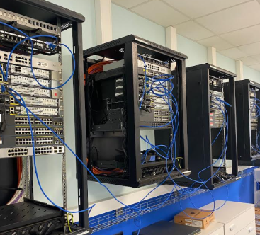
Création d'un mini-réseau d'opérateur et mis en place d'un lien VPN MPLS avec la manipulation de BGP, MP-BGP, IGP... Sur des routeurs Cisco physique
Reflection et conception d'une infrastructure de télécommunications de réseau mobile 4G/5G
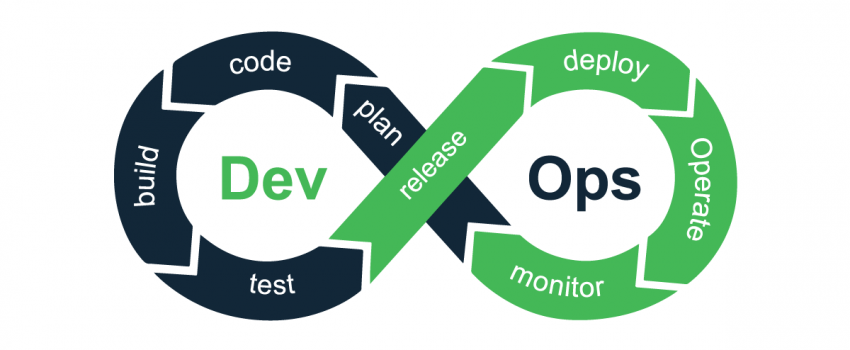
Introduction et utilisation de la contenerisation avec Docker, Git, GitLab et mis en place d'une pipeline CI/CD
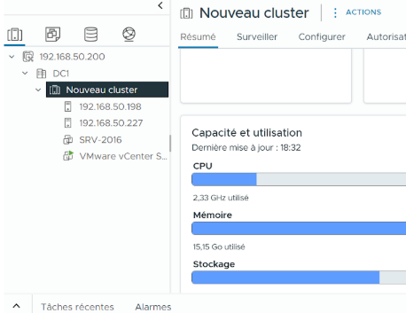
Création et configuration d'un datacenter et d'un cluster entre plusieurs ESXi depuis une VM de gestion vCenter
Réalisation d'un audits Wi-Fi professionnel pour mesurer la qualité du réseau Wi-Fi du département Réseaux & Télécom.
Mis en place d'un LAB packet tracer de VoIP permettant l'interconnexion et la communication entre deux réseaux différents à travers des Serveur TFTP/Call Manager Express
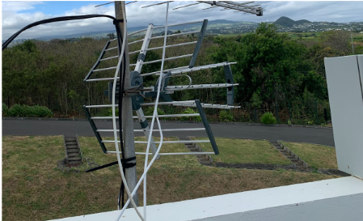
Mise en place d'antennes dans le but de capter et analyser des signaux TNT, FM, ADSB...
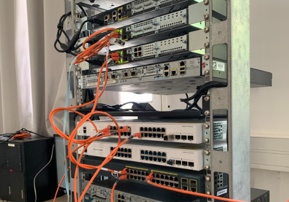
Mise en place d'une topologie réseau en physique fonctionnel avec le déploiement de service (Samba, Moodle & DHCP)
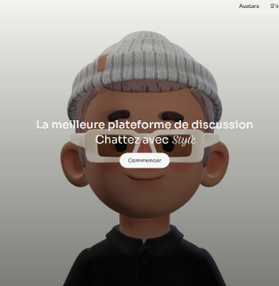
Mise en place d'une application Web de messagerie permettant l'échange de messages entre plusieurs utilisateurs ayant un compte.
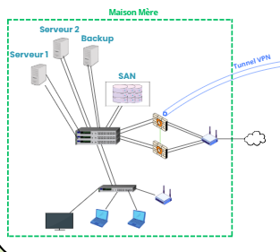
Conception entière d'un réseau informatique pour une PME avec solution multimédia (SAN, FireWall, VPN...) et réalisation d'un PoC avec point d'accés Wi-Fi, portail captif, servuer de streaming...
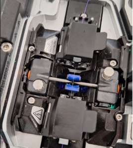
Utilisation de la réfléctométrie et de la photométrie pour effectuer des mesures sur une fibre optique. Utilisation également d'une cliveuse et d'une soudeuse pour effectuer des soudures entre deux fibres optiques

Configuration d’un Raspberry Pi pour piloter des LEDs et capteurs à distance via SSH et scripts Python.
Voici quelques-uns des projets que j’ai réalisés en dehors du cadre de ma formation.
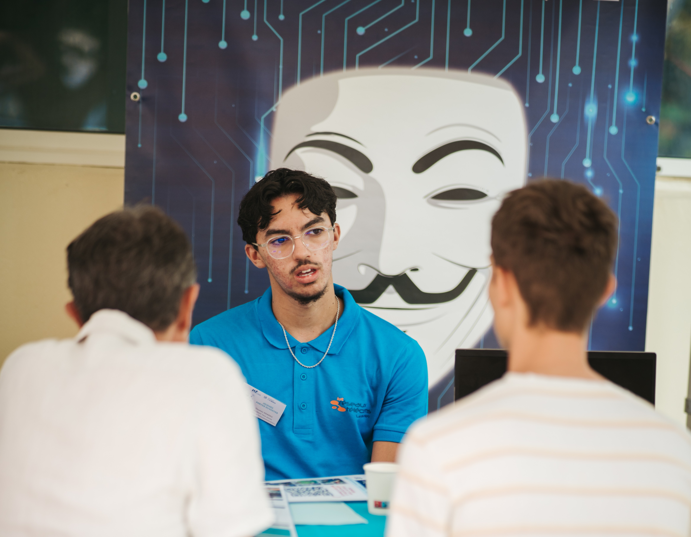
Présentation du BUT - Réseaux & Télécommunications lors de la journée portes ouvertes de l'IUT, interactions et échanges avec les futurs étudiants en recherche d'une formation post-bac
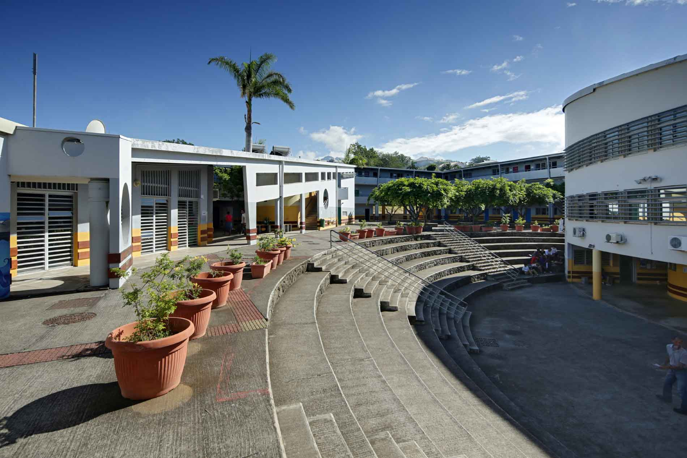
Participation au forum des anciens élève 2025 de Lycée Jean Joly afin de présenter ma formation aux lycéens en Terminal
Voici certains projets personnel que je souhaite réaliser durant ma deuxième et troisième année de BUT
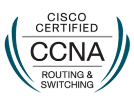
Le CCNA (Cisco Certified Network Associate) est une certification Cisco reconnue internationalement. Il permet d'apprendre les bases des réseaux informatiques, le fonctionnement des routeurs, des commutateurs, ainsi que les principaux protocoles réseau utilisés dans les infrastructures professionnelles
Le TOEIC (Test of English for International Communication) est une certification en langue Anglaise très reconnu dans le monde des entreprises et des ingénieurs
Aprés mon diplôme du BUT - Réseaux & Télécom, j'aimerais m'orienter vers une école qui propose une formation d'ingénieur dans le domaine des télécommunications comme celles-ci :
IMT Nord Paris est une école de l'institut Mines-Télécom et propose une formation d'Ingénieur spécialité – Informatique, Télécommunications et Réseaux
Compétences en mathématiques, électronique / réseaux / télécom
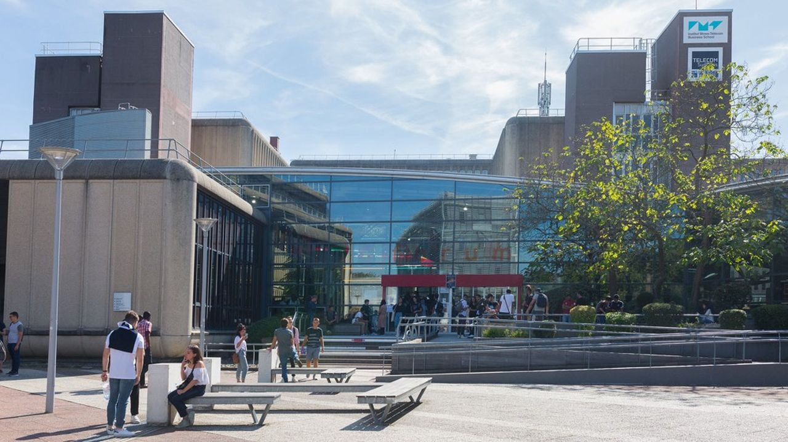
Télécom SudParis forme des ingénieurs généralistes du numérique, avec des possibilités d’approfondissement dans des thématiques liées aux réseaux, télécoms, cybersécurité, etc.
Profil technique solide réseaux, télécoms, informatique embarquée, anglais
L'INSA de Lyon propose une formation en Télécommunications, Service et Usages
Profil technique solide réseaux, télécoms, informatique.
Vous pouvez retrouvez la decription de mon projet professionnel ici :
Voir plus
Veuillez retrouver ci-dessous mon CV en format PDF.